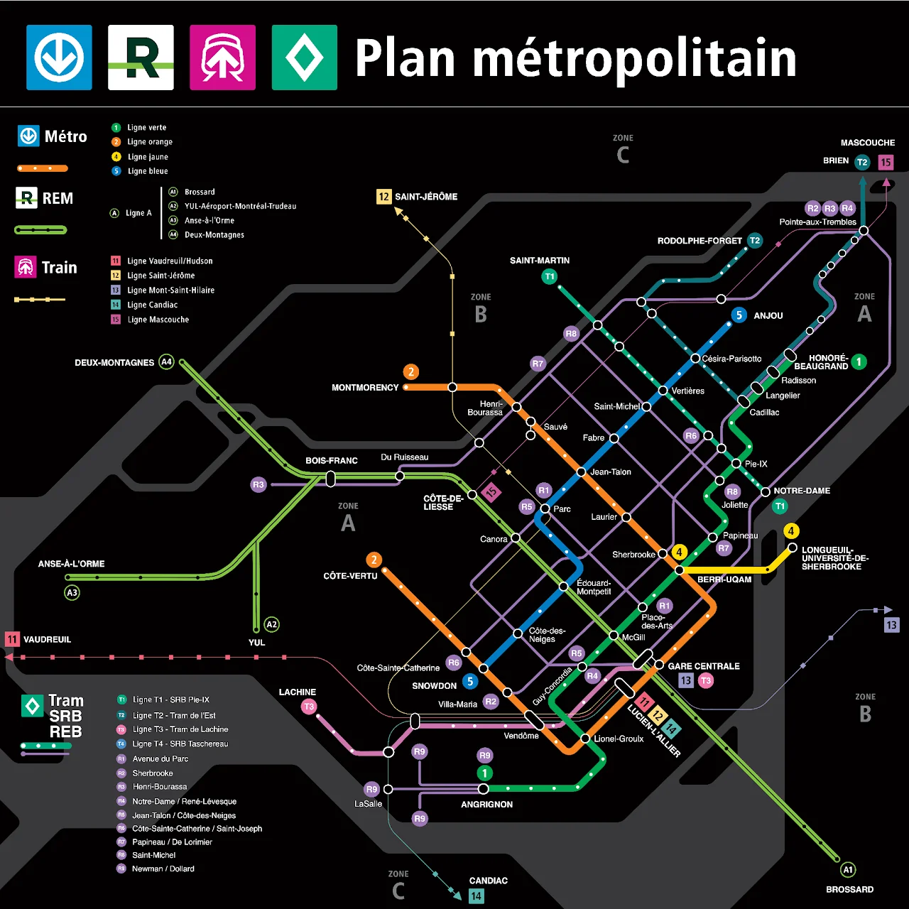
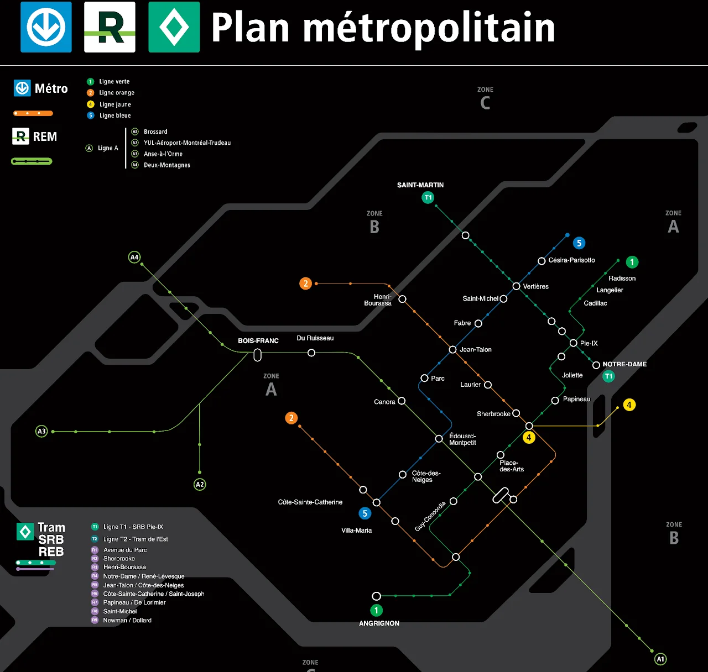
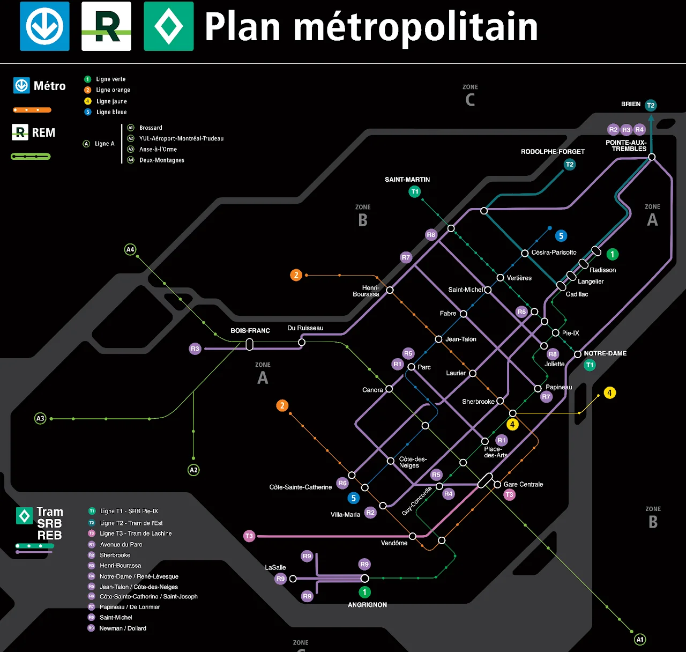
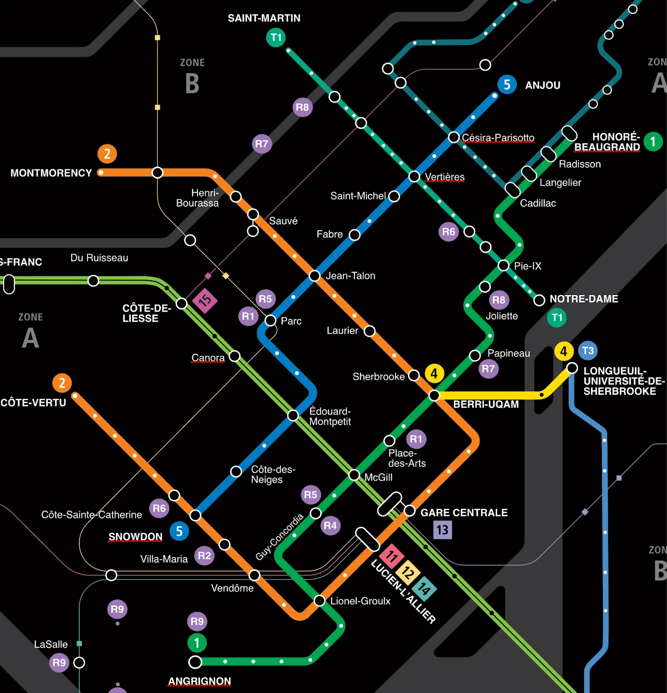
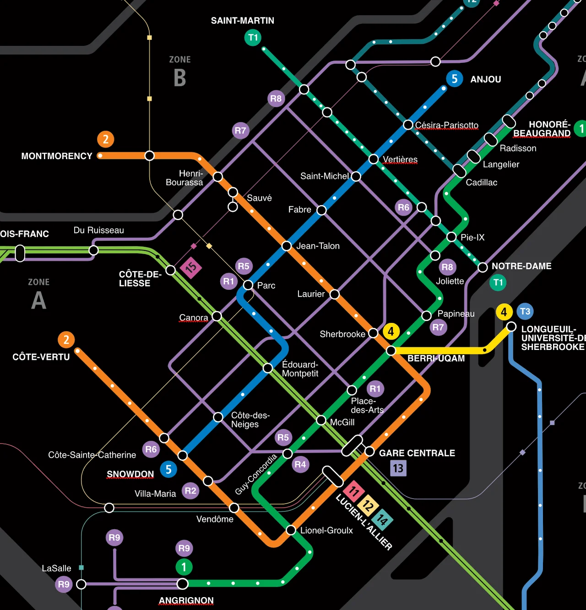
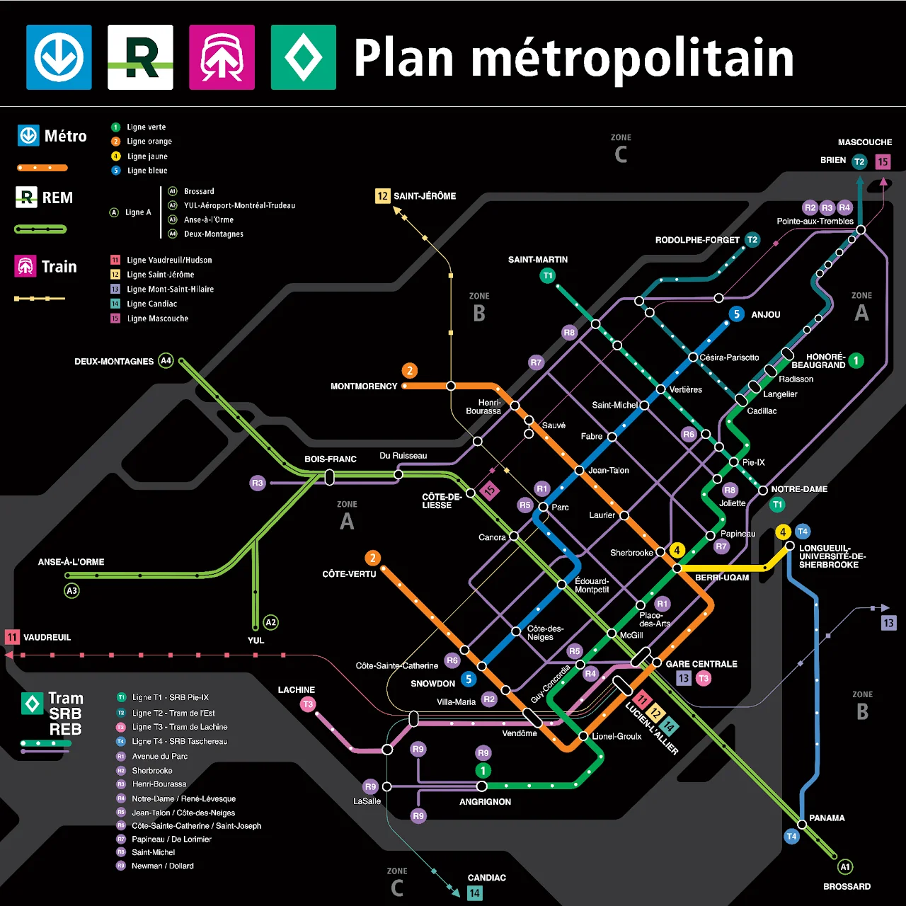

Dans la plateforme 2025 de Projet Montréal, 11 axes sont identifiés comme futurs tramway ou SRB légers faisant partie du Réseau Express Bus (REB). J'ai conçu ce plan pour illustrer les services lourds, fréquents et rapides de la région métropolitaine, incluant les lignes en service ou en construction ainsi que les lignes proposées par Projet Montréal.

Plan simplifié des réseaux de métro et bus de la région métropolitaine.
Pour les lignes REB, les numéros vont de 1 à 9 et la lettre R précède chaque numéro de ligne. Les numéros des lignes de bus actuelles empruntant un parcours similaire sont ajoutés entre parenthèses pour aider la compréhension. Le préfixe « T » est utilisé pour les SRB lourds et les tramways.
Le Réseau Express Bus vient améliorer drastiquement le maillage du réseau, tout en ajoutant des routes qui ne sont actuellement pas desservies par un service fréquent.


Comparatif du réseau de transport avant et après l'implantation du REB.

Plan incluant le SRB Taschereau sur la Rive-Sud de Montréal.
Plan complet du Réseau Express Bus proposé par Projet Montréal, conçu par Gabriel Fortin. Cliquer pour agrandir.Source : Plateforme électorale 2025 — Projet Montréal